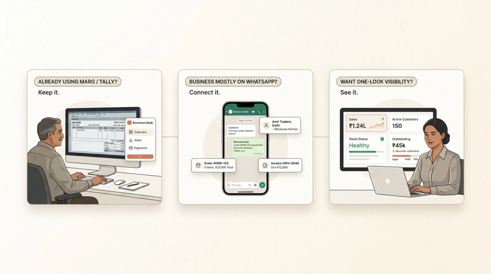
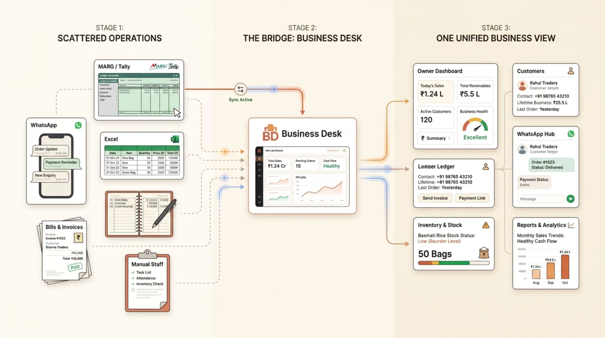
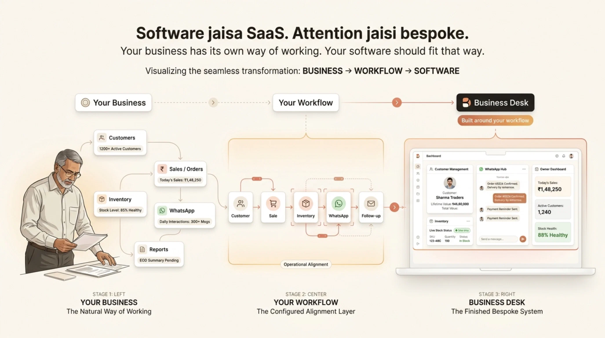

We build the systems
your business actually needs.
Aap business chalao. System hum sambhal lenge.
Axois Studios builds digital systems for growing businesses — from websites and workflow automation to our flagship product, Business Desk.
MARG/Tally ko replace nahi karna.
Uske upar apna management layer banana hai.
Free 15-minute business discussion. No boring sales pitch.


Already built for real businesses — now packaged into Business Desk.
Three ways we help a business move forward.
We don't want to be another generic software or web agency. We build practical digital infrastructure around real business needs.
Business Desk
A management layer for customers, operations, communication and visibility — without forcing you to replace what already works.
Explore product →Website Building
Business websites designed to explain what you do, establish trust and turn attention into enquiries.
Build a website →Workflow Automation
We experiment with automating repetitive business workflows — connecting tools, reducing manual work and testing what can be systemized.
See the experiment →Business Desk
Your business already has software. The missing part is often everything happening around it.
Business Desk gives growing businesses one practical management layer for customers, operations, communication and owner visibility.

Website Building
A website should do more than exist. It should make your business easier to understand and easier to trust.
- → Positioning and information architecture
- → Conversion-focused page structure
- → Responsive implementation
- → Product, service and case-study presentation
Workflow Automation
We are experimenting with a simpler question: what repetitive work in a business should not need a person doing it manually?
This is an evolving product direction, not a promise of a fixed feature set. We test real workflows, connect the tools involved and turn useful experiments into repeatable systems.
Discuss an Automation →Something happens
System responds
MARG/Tally mein sab hai.
Phir bhi kaam itna scattered kyun hai?
Billing ek jagah.
Customers ka data kahin aur.
WhatsApp mein important conversations.
Excel mein reports.
Diary mein woh cheez jo ‘yaad rakhni hai’. 😅

Hum aapka existing software replace nahi karte.
Hum uske missing management layer ko build karte.
Aap jahan ho, wahi se start karte hain.
Business badalne ki zaroorat nahi. System ko business ke around fit hona chahiye.

Already using MARG / Tally?
Perfect.
Jo software billing, stock aur accounts ke liye kaam kar raha hai, use change karne ki zaroorat nahi.
Business WhatsApp pe chal raha hai?
Koi problem nahi.
Customers, messages aur important information ko ek proper system mein lana hai.
Owner ko ek nazar mein business dekhna hai?
Bilkul.
Sales, customers, inventory aur important numbers — ek simple dashboard mein.
Scattered to Organised.

Keep what works. Add what is missing.
MARG/Tally handles billing and accounts reliably. Business Desk adds the high-visibility operational layer on top.
Aapke business ke liye software.
Aapke business jaisa software.
“Har business ka kaam karne ka tareeka alag hota hai. Isliye hum aapko ek generic software dekar nahi bolte: ‘Sir, isi mein adjust kar lijiye.’”
Pehle business samajhte hain. Phir system banate hain.

Jo kaam roz hota hai,
woh system mein hona chahiye.
Important business work ko scattered tools se nikaal kar ek simple working system mein lao.


Customers ko sirf save nahi karna. Samajhna hai.
Customer history, purchases, outstanding aur total business — ek jagah, jab bhi zaroorat ho.
WhatsApp Business Hub
WhatsApp ko business ka proper working desk banao. Customer communication ko scattered chats se structured information mein lao.


Cross-Selling
Existing customer se aur business ka opportunity identify karo. Naya customer dhoondhne se pehle purane customer ko samjho.
👨💼 Owner Dashboard
Business mein kya chal raha hai? Ek screen. Ek nazar. Cash in hand, receivables, and movement in seconds.

👥 Customer Management
Customer ka data ek jagah. Kisne kya kharida, kitna business diya aur customer history — easily accessible.
📦 Inventory Visibility
Sirf stock dekhna nahi. Samajhna hai ki business mein stock ke saath actually ho kya raha hai.
📈 Business Reports
‘Sir, sales kitni hui?’ Excel kholne ki zaroorat nahi. Dashboard kholo. Dekho. Samjho.
🔐 Backup & Resiliency
Business ka data sirf ek computer ya ek employee ke bharose nahi. Backup bhi system ka part hai.
Business chalana hai.
Data entry nahi.
Aapko software ka expert banne ki zaroorat nahi.
Aapko 17 dashboards. 42 reports. 100 settings. Aur ek training manual bhi nahi chahiye. 😵💫
Aapko bas apna kaam karna hai.
System ko kaam easy banana hai.
MARG/Tally chhodna nahi hai. 😌
Jo chal raha hai, woh chalne do.

Billing, Stock & Accounts
MARG / Tally continues doing what it already does best. Settle ho chuke accounting aur tax workflows ko chhedne ki zaroorat nahi.
Customers, WhatsApp & Visibility
Day-to-day operations ko ek fresh, actionable interface milta hai jisse owner aur team ko 100% control aur clarity milti hai.
Purana system rakho. Naya control le lo.
Generic software nahi.
Business-specific implementation.
We don't start by throwing features at you. We first understand the workflow, identify what is scattered, configure the right modules, and help your team start using the system.
Software hum banayenge.
Pehle business samjhenge.

Aapko generic demo nahi dikhayenge.
Pehle samjhenge:
Phir system uske according set hoga.
The product isn't a concept.
This is the kind of system we have already built and implemented for businesses.
Chalne do.
Humara goal aapka existing system todna nahi hai. Goal hai: Jo cheezein abhi diary, WhatsApp, Excel aur memory mein chal rahi hain — unhe ek simple system mein lana.
Understand → Build → Improve
Understand
We start with the business, workflow and bottleneck — not a feature checklist.
Build
We build the website, product or workflow around the agreed problem and scope.
Improve
Real usage tells us what should be simplified, automated or expanded next.
Start small. Build around your business.
Payment terms: 50% to start. 50% after completion.
Frequently asked questions

Aapka business jugaad pe nahi,
system pe chalna chahiye.
Aap humein apna business dikhao. Hum bata denge ki kya systemize kiya ja sakta hai.
Free business discussion · No obligation